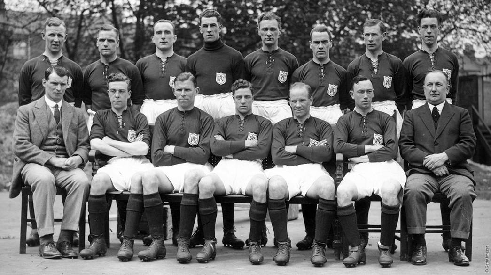
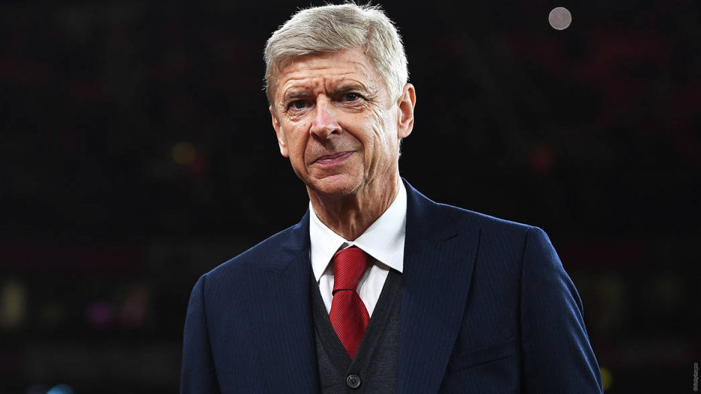
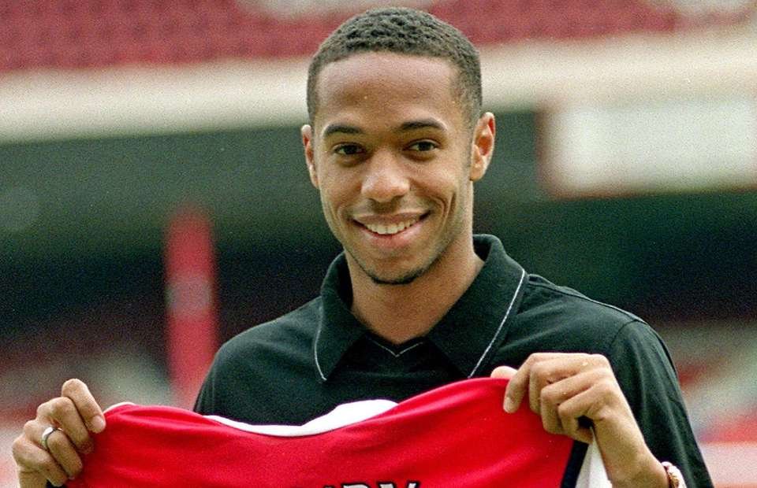
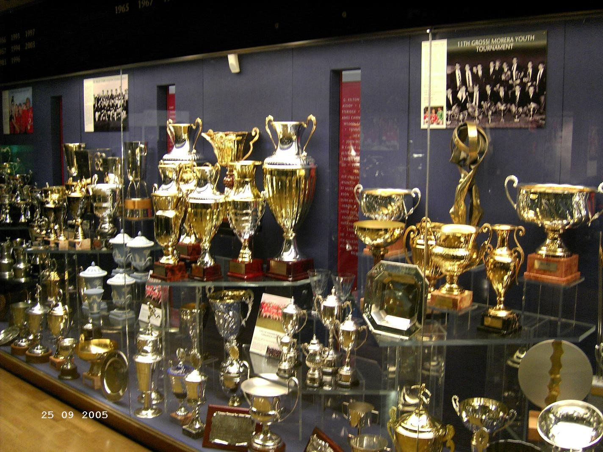
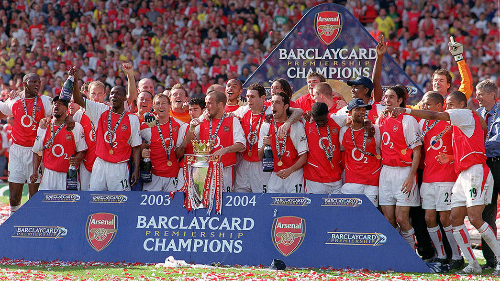
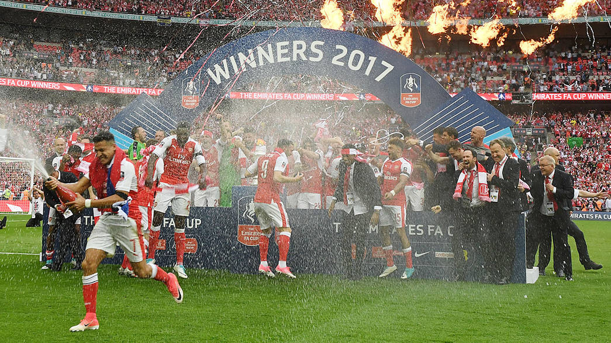
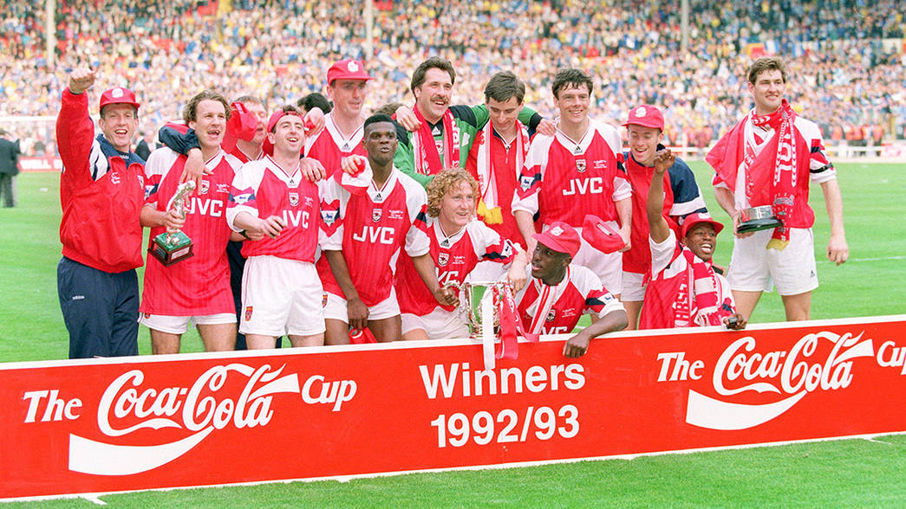
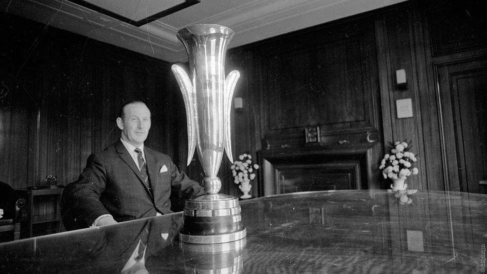
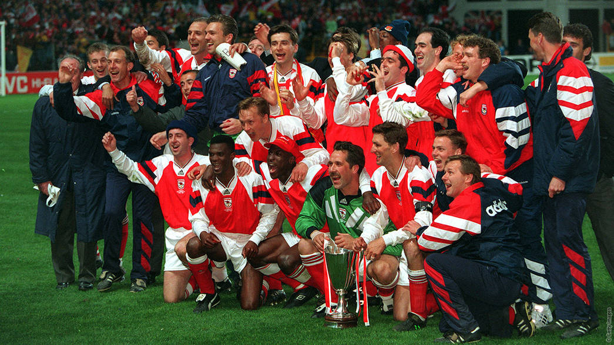
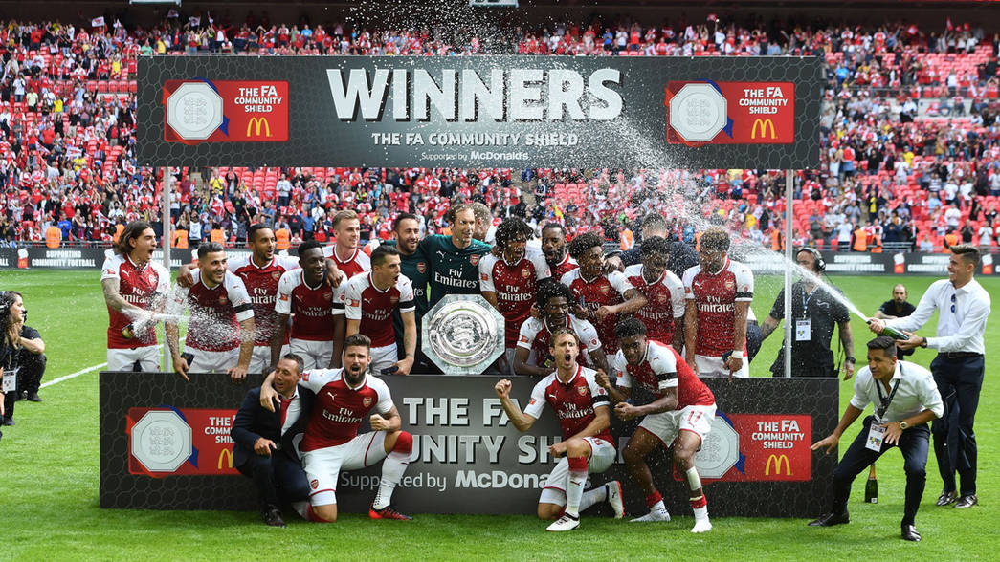

History

The history of Arsenal Football Club between 1886 and 1966 covers the time from the club's foundation, through the first two major periods of success (the 1930s, and the late 1940s and early 1950s, respectively) and the club's subsequent decline to mid-table status in the 1960s.
Arsenal Football Club was founded in 1886 as a munition workers' team from Woolwich, then in Kent, now southeast London. They turned professional in 1891 and joined The Football League two years later. They were promoted to the First Division in 1904 but financial problems meant they were liquidated and reformed. They were bought out by Sir Henry Norris that year and to improve the club's financial standing, he moved the team to Arsenal Stadium, Highbury, north London in 1913. After the First World War he arranged for the club's promotion back to the First Division, in controversial circumstances.
It was not until the appointment of Herbert Chapman in 1925 that Arsenal had their first period of major success; Chapman modernised and reformed the club's practices and tactics, and under him and his successor George Allison (who took over after Chapman's death in January 1934), Arsenal won five First Division titles and two FA Cups in the 1930s. After the Second World War, Tom Whittaker continued the success, leading the club to two First Division titles and an FA Cup. After Whittaker's death Arsenal's fortunes gradually declined; by 1966, they were in mid-table obscurity and had not won a trophy in thirteen years. This led to the dismissal of Billy Wright as manager in 1966, and with it the appointment of Bertie Mee, who would go on to turn around the club's fortunes.
Legends
Arsene Wenger (click image to see the other picture of him)

Arsène Charles Ernest Wenger OBE (French pronunciation: [aʁsɛn vɛŋɡɛʁ]; born 22 October 1949) is a French football manager and former player. He was the manager of Arsenal from 1996 to 2018, where he was the longest-serving and most successful in the club's history. His contribution to English football through changes to scouting, players' training, and diet regimens revitalised Arsenal and aided the globalisation of the sport in the 21st century.
Born in Strasbourg and raised in Duttlenheim to an entrepreneurial family, Wenger was introduced to football by his father, the manager of the local village team. After a modest playing career, in which he made appearances for several amateur clubs, Wenger obtained a manager's diploma in 1981. Following an unsuccessful period at Nancy which culminated in his dismissal in 1987, Wenger joined Monaco; the club won the league championship in 1988. In 1991, Wenger guided Monaco to victory in the Coupe de France, but their failure to regain the league title in later seasons led to his departure from the club by mutual consent in 1994. He briefly coached J.League side Nagoya Grampus Eight and won the Emperor's Cup and Japanese Super Cup during his stay in Japan.
Wenger was named manager of Arsenal in 1996, and two years later, he led the club to a Premier League and FA Cup double. The club won another league and cup double in 2002 and retained the FA Cup a year later. In 2004, Wenger managed Arsenal to an undefeated domestic league season, a feat last accomplished by Preston North End, 115 years previously. Arsenal later eclipsed Nottingham Forest's record of 42 league matches unbeaten and went seven more matches before losing in October 2004. The club made their first appearance in a Champions League final in 2006, though they lost to Barcelona. After a period of almost nine years without a trophy, which coincided with the club relocating to the Emirates Stadium, Wenger guided Arsenal to further FA Cup success in 2014, 2015 and 2017, before stepping down as manager a year later.
The nickname "Le Professeur" (French: usually translated as "The Teacher") is used by fans and the British media to reflect Wenger's studious demeanour. His approach to the game emphasises an attacking mentality, with the aim that football ought to be entertaining on the pitch. Wenger's Arsenal teams have been criticised for their indiscipline; his players received 100 red cards between September 1996 and February 2014, though the team has won awards for sporting fair play. At Monaco, Wenger earned a reputation for spotting young talent, and he has remained focused on developing a youth system.
Thiery Henry (click image to see the other picture of him)

Thierry Daniel Henry (French pronunciation: [tjɛʁi ɑ̃ʁi]; born 17 August 1977) is a French professional football coach and former player who is currently the manager of Major League Soccer club Montreal Impact. He is considered one of the greatest strikers of all time and has often been debated by pundits and journalists as the greatest striker in the history of the Premier League.[4] In 2003 and 2004, Henry was the runner-up for the FIFA World Player of the Year, and was runner-up for the Ballon d'Or in the former year. He was named the PFA Players' Player of the Year twice, the FWA Footballer of the Year three times, and was included in the UEFA Team of the Year five times. He was also one of the most commercially marketed footballers during the 2000s.
Henry made his professional debut with Monaco in 1994 before signing for defending Serie A champions Juventus. However, limited playing time, as well as disagreements with the club's hierarchy, led to him signing for English club Arsenal for £11 million in 1999. Under long-time mentor and coach Arsène Wenger, Henry became a prolific striker and Arsenal's all-time leading scorer with 228 goals in all competitions. He won the Premier League Golden Boot a record four times, won two FA Cups and two Premier League titles with the club, including one during an unbeaten season dubbed The Invincibles. He spent his final two seasons with Arsenal as club captain, leading them to the 2006 UEFA Champions League Final. In June 2007, he transferred to Barcelona. In the 2008-09 season, he was a key part of the club's historic treble when they won La Liga, the Copa del Rey and the UEFA Champions League. In 2010, he joined New York Red Bulls of Major League Soccer (MLS). He returned to Arsenal on loan for two months in 2012, before retiring in 2014.
Henry enjoyed sustained success with France, winning the 1998 FIFA World Cup, UEFA Euro 2000 and 2003 FIFA Confederations Cup. He was awarded the French Player of the Year five times. He was also named to the UEFA Euro 2000 Team of the Tournament, awarded both the 2003 FIFA Confederations Cup Golden Ball and Golden Shoe, and was named to the 2006 FIFA World Cup All-Star Team. In October 2007, he became his country's record goalscorer. After amassing 123 appearances and 51 goals, Henry retired from international football after the 2010 FIFA World Cup.
After retiring, Henry transitioned into coaching, and was appointed as an assistant coach at Belgium in 2016, before assuming the role as the head coach at former club Monaco in 2018. He was relieved of his duties at Monaco in January 2019, and returned to MLS less than a year later to manage the Montreal Impact.
Trophies

Arsenal have won 45 trophies in their illustrious history.
League Champions [13]

FA Cup Winners [13] [Record]

League Cup Winners [2]

European Fairs Cup Winners [1]

European Cup Winners Cup Winners [1]

Charity/Community Shield Winners [14 + 1 shared]
